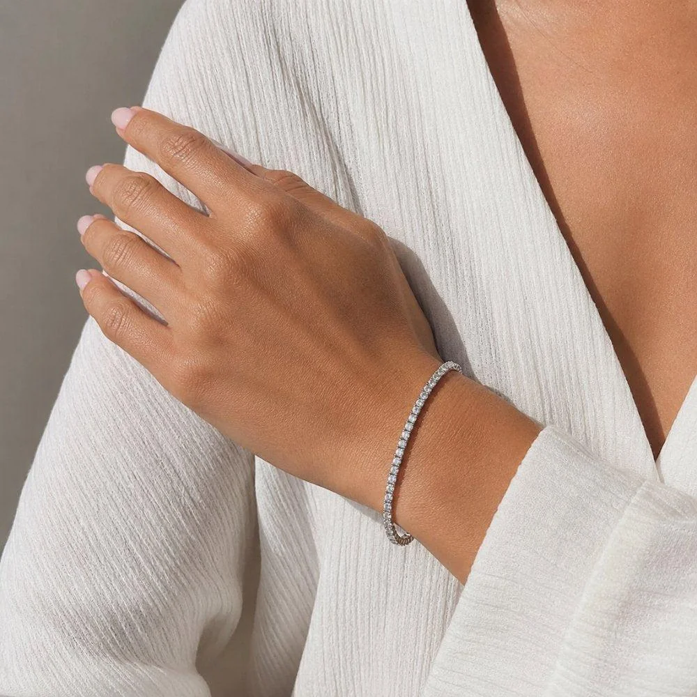
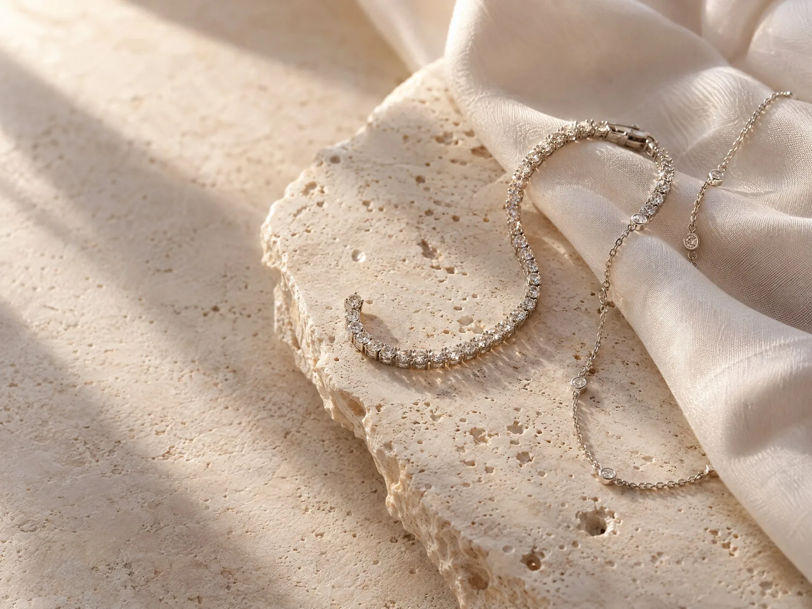
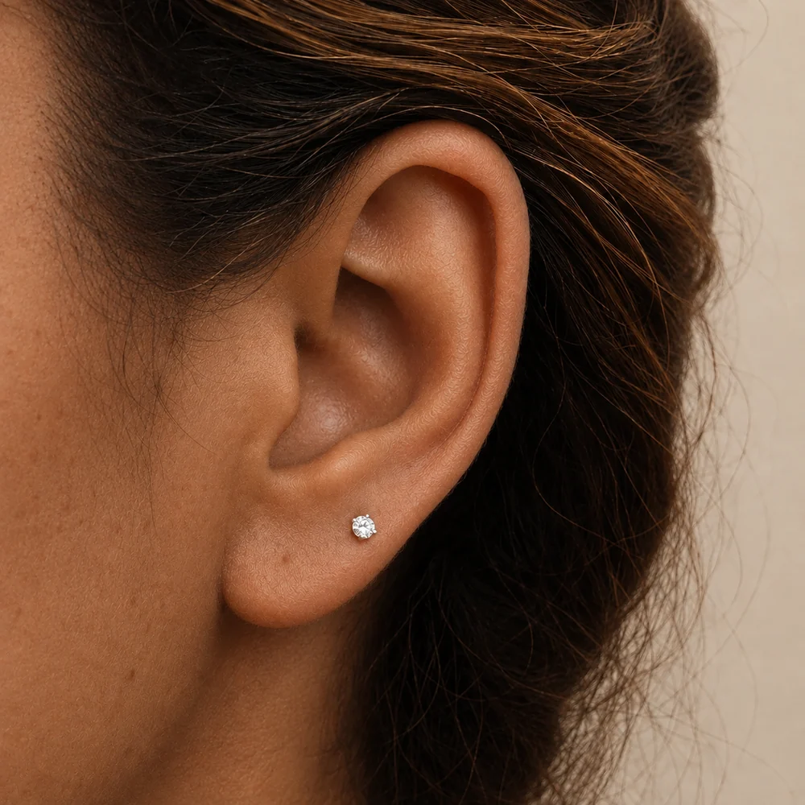
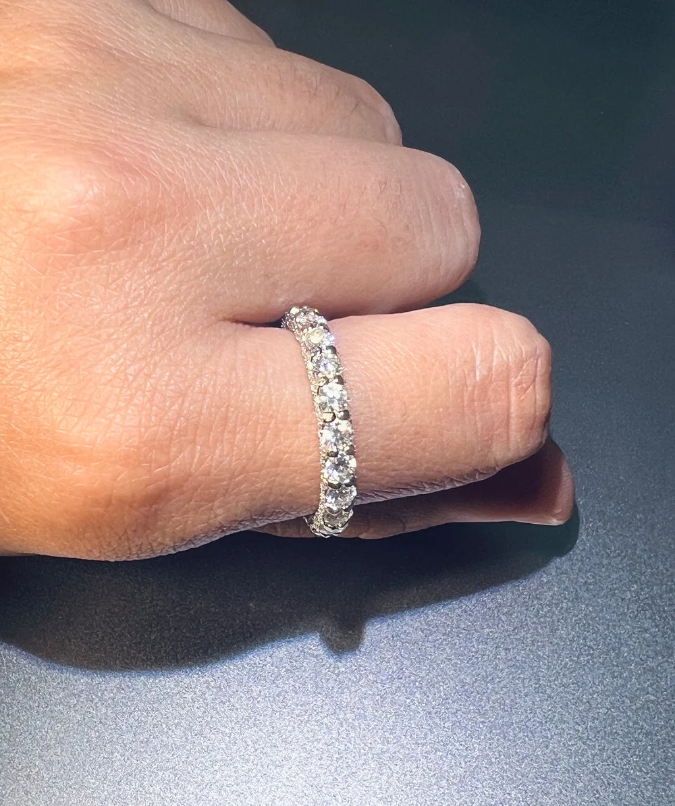
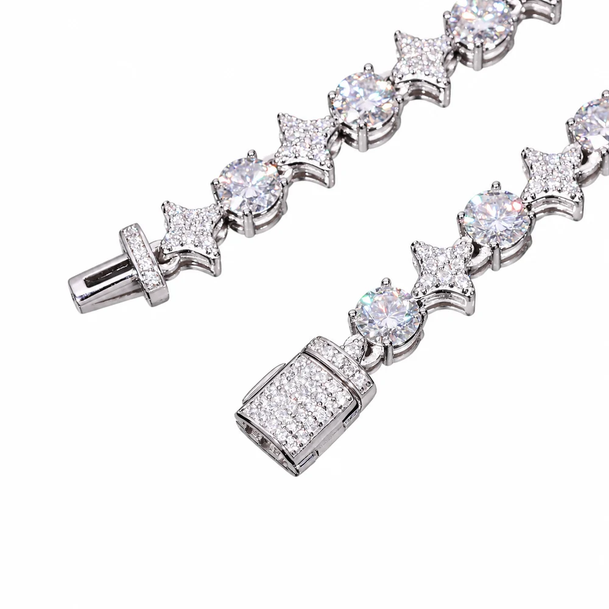
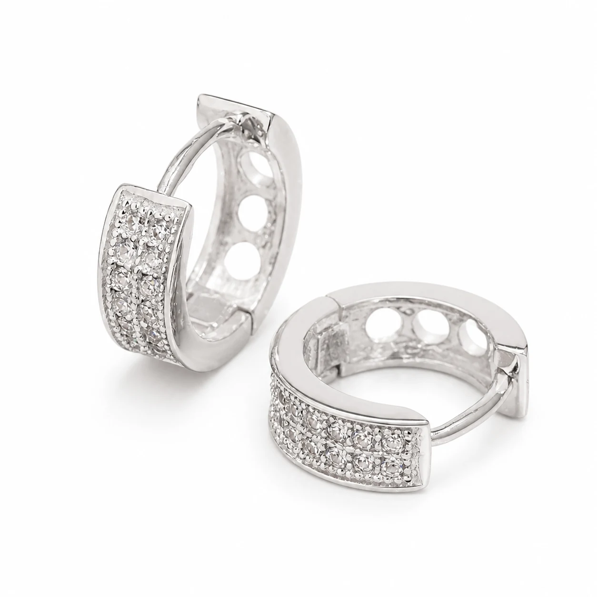
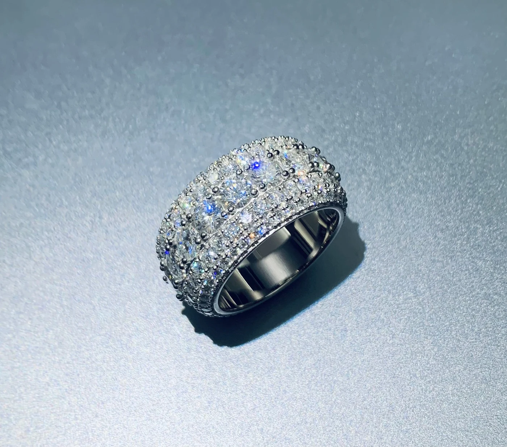
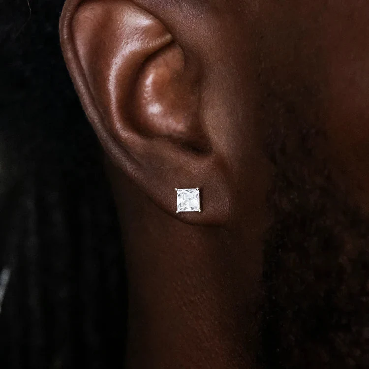
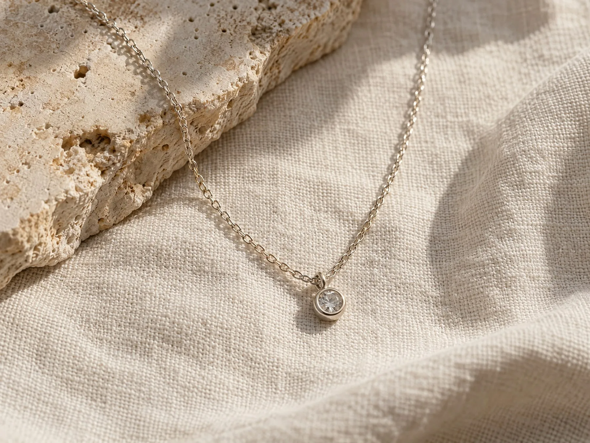

Proveedor · Miles Jewellery
Pulseras
Pulsera tennis de moissanita 2–6 mm
Plata 925 rodiada · anchos de 2 a 6 mm · varias longitudes.
Precio y opciones en tiendaVer en Miles
MOISSANITA Y PLATA 925, ELEGIDAS CON CRITERIO
Descubre joyas recomendadas y piezas propias de Sisi. Te explicamos los materiales declarados y dónde se completa cada compra.
En cada ficha indicamos quién vende y dónde se completa la compra.

OPINIONES DEL PERFIL DE SISI
Opiniones del perfil de Sisi en Vinted; no son reseñas de productos afiliados. Consulta las valoraciones y su contexto en la plataforma.
Perfil consultado el 24 de octubre de 2026.
SISI / SELECCIÓN AFILIADA
Trece artículos de Miles Jewellery con fichas e imágenes oficiales. Comprueba precio, disponibilidad, metal y variantes en la tienda antes de comprar.
Publicidad · Algunos enlaces son afiliados de Awin. Si compras a través de ellos, Sisi puede recibir una comisión sin coste adicional para ti. La compra se completa en Miles Jewellery.
EXPLORA POR CATEGORÍA
Mostrando 6 de 13 joyas

Proveedor · Miles JewelleryPlata 925 rodiada · anchos de 2 a 6 mm · varias longitudes.
 Proveedor · Miles Jewellery
Proveedor · Miles Jewellery
Plata 925 · acabados plata u oro · dos tamaños.
 Proveedor · Miles Jewellery
Proveedor · Miles Jewellery
Plata 925 · varios acabados · comprueba las opciones de cadena.
 Proveedor · Miles Jewellery
Proveedor · Miles Jewellery
Colgante de plata 925 rodiada · cadena compatible seleccionable.
 Proveedor · Miles Jewellery
Proveedor · Miles Jewellery
Plata 925 · tres acabados · la cadena no está incluida.

Proveedor · Miles JewelleryPlata 925 · acabados plata u oro de 14K chapado · cierre a elegir.

Proveedor · Miles JewelleryPlata 925 rodiada · moissanita · tallas 5–9 (US).

Proveedor · Miles JewelleryPlata 925 · ancho de 8 mm · plata rodiada u oro de 14K chapado.
 Proveedor · Miles Jewellery
Proveedor · Miles Jewellery
Plata 925 · acabado dorado chapado · colgante solo o con cadena compatible.

Proveedor · Miles JewelleryPlata 925 · 13,3 × 12,5 mm · plata rodiada u oro chapado · par.
 Proveedor · Miles Jewellery
Proveedor · Miles Jewellery
Plata 925 · anchos de 2–6,5 mm · largos 16–24 pulgadas · acabado dorado chapado disponible.

Proveedor · Miles JewelleryPlata 925 · tallas US 6–12 · opción de acabado dorado chapado.

Proveedor · Miles JewelleryPlata 925 rodiada · tamaños 4,25–9 mm · cierre de rosca o presión.
No hay piezas en esta categoría.
Hay 13 recomendaciones; empieza por las destacadas o filtra por categoría. Ver colecciones por categoría ↗
ASISTENTE DE COMPRA · RESPUESTAS LOCALES
Te orienta entre las piezas del catálogo y las guías de Sisi.
Pregunta por pendientes, anillos, pulseras, cadenas, acabados dorados, tallas o cuidado.
Asistente local basado en el catálogo: tu consulta no se envía a servicios externos.
PIEZAS PROPIAS DE SISI
Explora nuestros anuncios de joyería o visita los perfiles completos. Precio y disponibilidad se consultan en cada plataforma.
SISI / ANUNCIOS PROPIOS
Piezas enlazadas directamente a sus anuncios de Vinted o Wallapop; no son enlaces afiliados.
El precio y la disponibilidad pueden cambiar. Confirma los datos en la plataforma; algunos artículos publicados en ambas aparecen agrupados en una ficha.
 Anuncio propio
Anuncio propio
Vinted indica plata 925 y moissanita; Wallapop describe plata fina y menciona moissanita. Talla ajustable según los anuncios.
 Anuncio propio
Anuncio propio
Vinted indica plata 925, zirconia y cierre huggie; Wallapop menciona plata y cierre de gancho. Confirma el detalle en la ficha.
 Anuncio propio
Anuncio propio
Plata y piedra amarilla, según el anuncio · cadena ajustable de 45–50 cm.
Ver anuncio en Vinted Anuncio propio
Anuncio propio
El atributo indica plata; el texto menciona oro blanco de 18K. Confirma el metal antes de comprar.
Ver anuncio en Vinted Anuncio propio
Anuncio propio
Talla ajustable · nuevo con etiquetas. El anuncio no especifica el metal; confirma la composición antes de comprar.
Ver anuncio en Vinted Anuncio propio
Anuncio propio
Color plateado según ficha; no se especifica la ley del metal.
Ver anuncio en Wallapop Anuncio propio
Anuncio propio
Plata de ley 925 y circonitas, según el anuncio.
Ver anuncio en WallapopANTES DE ELEGIR
Sisi selecciona y organiza; el vendedor o marketplace indicado gestiona la transacción.
Las recomendaciones se compran en Miles Jewellery. Las piezas propias se compran en Vinted o Wallapop. Comprueba pago, envío y devoluciones en la plataforma de destino.
Si compras desde algunos enlaces de Miles, Sisi puede recibir una comisión sin coste adicional para ti. El vendedor sigue siendo Miles Jewellery.
No necesariamente. En las fichas de Miles que hemos revisado, algunas variantes son plata 925 chapada. Comprueba el metal y acabado exactos en la ficha de cada pieza.
Sí. Consulta el precio, las variantes y la disponibilidad directamente en Miles, Vinted o Wallapop antes de comprar.

MENOS, PERO MEJOR
Sisi reúne piezas luminosas con información clara: lo que recomendamos en tiendas externas no se confunde con los anuncios propios de nuestros perfiles.
Leer el journalEl brillo más bonito es el que eliges para ti.
SISI JOYAS